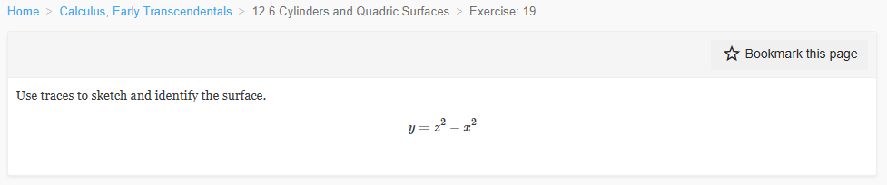
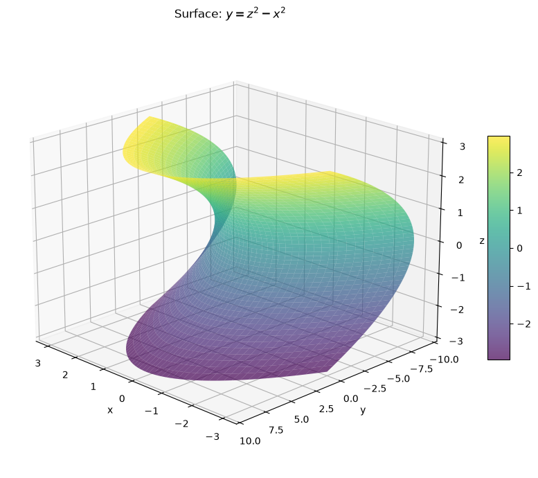
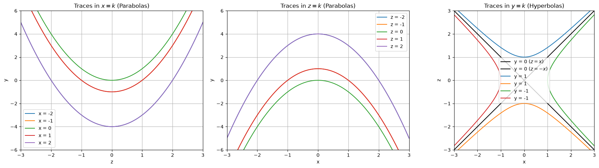
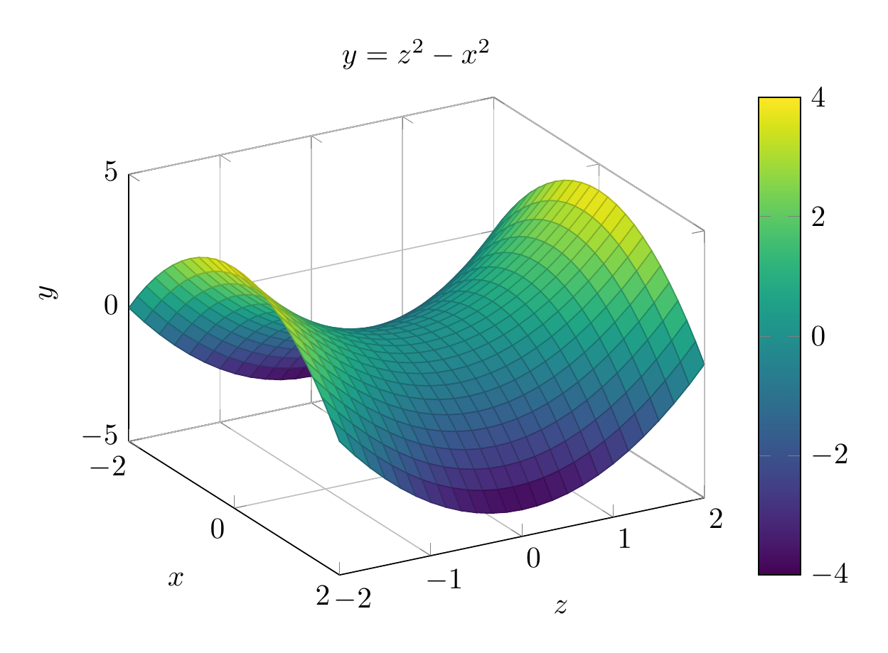
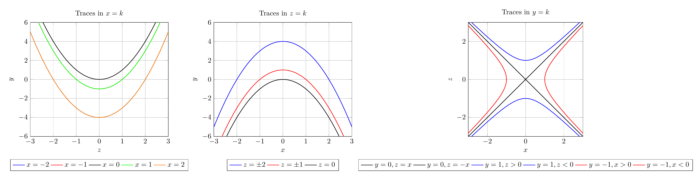

Path: mcma-Qwen3.6-27B/calculus-12.6.19/chat_20260827_001733_681903_utc_0800
Problem
Please solve the math problem in the image.
20260827_001733_681903_utc_0800_0.png

End of problem
Answer
To identify the surface $y = z^2 - x^2$, we examine its traces:
1. **Traces in $x = k$:** $y = z^2 - k^2$. These are parabolas opening in the positive $y$ direction.
2. **Traces in $z = k$:** $y = k^2 - x^2$. These are parabolas opening in the negative $y$ direction.
3. **Traces in $y = k$:** $z^2 - x^2 = k$. These are hyperbolas (or intersecting lines when $k=0$).
A surface with parabolic traces in two directions and hyperbolic traces in the third is a **hyperbolic paraboloid**.
$\\boxed{\text{hyperbolic paraboloid}}$
---


\documentclass[border=10pt]{standalone}
\usepackage{pgfplots}
\pgfplotsset{compat=1.18}
\begin{document}
\begin{tikzpicture}
\begin{axis}[
view={60}{30},
xlabel={$x$},
ylabel={$z$},
zlabel={$y$},
title={$y = z^2 - x^2$},
domain=-2:2,
y domain=-2:2,
samples=25,
colormap/viridis,
colorbar,
grid=major,
zmin=-5,
zmax=5
]
% Map: x_plot = x, y_plot = z, z_plot = y = z^2 - x^2 = y_plot^2 - x_plot^2
\addplot3[surf] {y^2 - x^2};
\end{axis}
\end{tikzpicture}
\end{document}

\documentclass[border=10pt]{standalone}
\usepackage{pgfplots}
\pgfplotsset{compat=1.18}
\begin{document}
\begin{tikzpicture}
\begin{axis}[
xlabel={$z$},
ylabel={$y$},
title={Traces in $x=k$},
domain=-3:3,
samples=50,
grid=major,
legend style={at={(0.5,-0.2)}, anchor=north, legend columns=-1},
ymin=-6, ymax=6,
xmin=-3, xmax=3
]
\addplot[blue, thick] {x^2 - 4}; \addlegendentry{$x=-2$}
\addplot[red, thick] {x^2 - 1}; \addlegendentry{$x=-1$}
\addplot[black, thick] {x^2}; \addlegendentry{$x=0$}
\addplot[green, thick] {x^2 - 1}; \addlegendentry{$x=1$}
\addplot[orange, thick] {x^2 - 4}; \addlegendentry{$x=2$}
\end{axis}
\end{tikzpicture}
\begin{tikzpicture}
\begin{axis}[
xlabel={$x$},
ylabel={$y$},
title={Traces in $z=k$},
domain=-3:3,
samples=50,
grid=major,
legend style={at={(0.5,-0.2)}, anchor=north, legend columns=-1},
ymin=-6, ymax=6,
xmin=-3, xmax=3
]
\addplot[blue, thick] {4 - x^2}; \addlegendentry{$z=\pm2$}
\addplot[red, thick] {1 - x^2}; \addlegendentry{$z=\pm1$}
\addplot[black, thick] {-x^2}; \addlegendentry{$z=0$}
\end{axis}
\end{tikzpicture}
\begin{tikzpicture}
\begin{axis}[
xlabel={$x$},
ylabel={$z$},
title={Traces in $y=k$},
domain=-3:3,
samples=50,
grid=major,
legend style={at={(0.5,-0.2)}, anchor=north, legend columns=-1},
ymin=-3, ymax=3,
xmin=-3, xmax=3,
axis equal image
]
\addplot[black, thick] {x}; \addlegendentry{$y=0, z=x$}
\addplot[black, thick] {-x}; \addlegendentry{$y=0, z=-x$}
\addplot[blue, thick] {sqrt(x^2 + 1)}; \addlegendentry{$y=1, z>0$}
\addplot[blue, thick] {-sqrt(x^2 + 1)}; \addlegendentry{$y=1, z<0$}
\addplot[red, thick] (sqrt(x^2 + 1), x); \addlegendentry{$y=-1, x>0$}
\addplot[red, thick] (-sqrt(x^2 + 1), x); \addlegendentry{$y=-1, x<0$}
\end{axis}
\end{tikzpicture}
\end{document}

End of answer